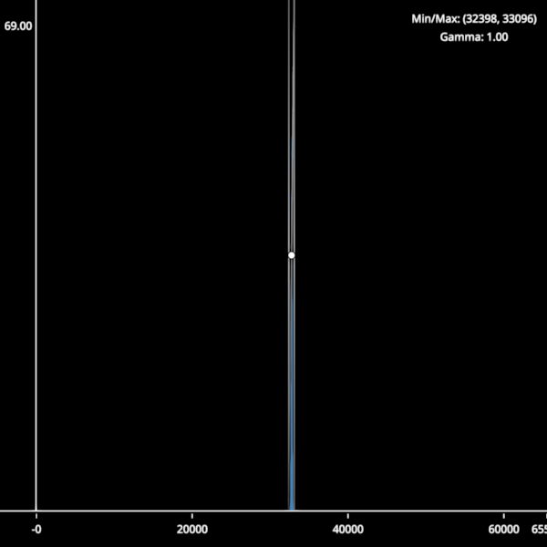

Histogram#
An interactive histogram.

from __future__ import annotations
from math import ceil, floor, log10
from typing import TYPE_CHECKING
import cmap
import numpy as np
import numpy.typing as npt
import scenex as snx
from scenex.app import CursorType, events
from scenex.utils import projections
if TYPE_CHECKING:
from collections.abc import Sequence
def gaussian_dataset(
n: int = 100000,
mean: float = 32767.5,
std: float = 80.0,
dtype: np.dtype | None = None,
) -> np.ndarray:
"""Generate a gaussian-distributed dataset clipped to the given dtype range."""
if dtype is None:
dtype = np.dtype(np.uint16)
info = np.iinfo(dtype)
data = np.random.normal(mean, std, n)
return np.clip(data, info.min, info.max).astype(dtype)
def _calc_hist_bins(data: np.ndarray) -> tuple[np.ndarray, np.ndarray]:
maxval = np.iinfo(data.dtype).max
counts = np.bincount(data.flatten(), minlength=maxval + 1)
bin_edges = np.arange(maxval + 2) - 0.5
return counts, bin_edges
_AXIS = 40 # pixels reserved for each axis strip
_LEGEND_W = 160 # legend width in pixels
_LEGEND_H = 50 # legend height in pixels
class Histogram:
"""A simple interactive histogram view with adjustable clims and gamma."""
def __init__(self) -> None:
self._clims: tuple[float, float] = (0, 65535)
self._gamma = 1.0
self._grabbed: snx.Node | None = None
self._values: np.ndarray | None = None
self._bins: np.ndarray | None = None
# Canvas
self.canvas = snx.Canvas(
width=600,
height=600,
visible=True,
)
# -- Views -- ##
# x-axis
self.x_view = snx.View(
scene=snx.Scene(name="x axis"),
camera=snx.Camera(),
)
self.x_view.layout.y_start = f"-{_AXIS}px"
self._init_x_view()
self.canvas.views.append(self.x_view)
# y-axis
self.y_view = snx.View(
scene=snx.Scene(name="y axis"),
camera=snx.Camera(),
)
self.y_view.layout.x_end = f"{_AXIS}px"
self.y_view.layout.y_end = f"-{_AXIS}px"
self._init_y_view()
self.canvas.views.append(self.y_view)
# plot
self.view = snx.View(
scene=snx.Scene(name="main scene"),
camera=snx.Camera(interactive=True),
)
self.view.layout.x_start = f"{_AXIS}px"
self.view.layout.y_end = f"-{_AXIS}px"
self._init_main_view()
self.canvas.views.append(self.view)
# legend
self.legend_view = snx.View(
scene=snx.Scene(name="legend"),
camera=snx.Camera(),
)
self.legend_view.layout.background_color = cmap.Color((0, 0, 0, 0))
self.legend_view.layout.x_start = f"-{_LEGEND_W}px"
self.legend_view.layout.y_end = f"{_LEGEND_H}px"
self._init_legend_view()
self.canvas.views.append(self.legend_view)
def _init_x_view(self) -> None:
"""Populate the x-axis view scene."""
self.x_axis = snx.Line(
vertices=np.array([[0, 0, 0], [1, 0, 0]]),
width=2,
color=snx.UniformColor(color=cmap.Color("white")),
)
self.x_view.scene.add_child(self.x_axis)
self._tick_objects: list[snx.Text] = []
# Pre-create 10 tick objects with line children (enough for min, max, and ticks)
for _ in range(10):
tick_line = snx.Line(
vertices=np.array([[0, 0, 0], [0, -0.1, 0]]),
width=1,
color=snx.UniformColor(color=cmap.Color("white")),
transform=snx.Transform().translated((0, 0.4, 0)),
)
tick_text = snx.Text(text="0", children=[tick_line], antialias=True) # type: ignore
self._tick_objects.append(tick_text)
def _init_y_view(self) -> None:
"""Populate the y-axis view scene."""
self.y_axis = snx.Line(
vertices=np.array([[0, 0, 0], [0, 1, 0]]),
width=2,
color=snx.UniformColor(color=cmap.Color("white")),
)
self.y_max = snx.Text(
text="1", transform=snx.Transform().translated((-0.5, 0.95)), antialias=True
)
self.y_view.scene.add_child(self.y_axis)
self.y_view.scene.add_child(self.y_max)
def _init_legend_view(self) -> None:
"""Populate the legend view with clim/gamma text."""
self.legend_clims = snx.Text(antialias=True)
self.legend_gamma = snx.Text(antialias=True)
self.legend_clims.transform = snx.Transform().translated((0.5, 0.6, 0))
self.legend_gamma.transform = snx.Transform().translated((0.5, 0.2, 0))
self.legend_view.scene.add_child(self.legend_clims)
self.legend_view.scene.add_child(self.legend_gamma)
self._update_legend()
def _update_legend(self) -> None:
"""Refresh legend text to reflect current clims and gamma."""
lo, hi = self._clims
self.legend_clims.text = f"Min/Max: ({lo:.0f}, {hi:.0f})"
self.legend_gamma.text = f"Gamma: {self._gamma:.2f}"
def _init_main_view(self) -> None:
"""Populate the main histogram view scene and connect event handlers."""
self.mesh = snx.Mesh(
vertices=np.zeros((1, 3), dtype=np.float32),
faces=np.zeros((1, 3), dtype=np.uint16),
color=snx.UniformColor(color=cmap.Color("steelblue")),
order=0,
)
# Split LUT line into three interactive components
self.left_clim = snx.Line(
name="left clim",
interactive=True,
order=1,
)
self.gamma_curve = snx.Line(
name="gamma curve",
interactive=False,
order=1,
)
self.right_clim = snx.Line(
name="right clim",
interactive=True,
order=1,
)
self.gamma_handle = snx.Points(
name="gamma handle",
vertices=np.array([[0.5, 0.5, 0]]),
size=8,
scaling="fixed",
face_color=snx.UniformColor(color=cmap.Color("white")),
edge_color=snx.UniformColor(color=cmap.Color("black")),
interactive=True,
order=2,
)
self._create_static_clim_lines()
self._update_lut_line()
self.controls = snx.Scene(
name="controls scene",
children=[
self.left_clim,
self.gamma_curve,
self.right_clim,
self.gamma_handle,
],
interactive=True,
)
# Draw order (from bottom to top):
# 0: histogram mesh
self.mesh.order = 0
self.view.scene.add_child(self.mesh)
# 1: controls (clim lines, gamma curve, handle)
self.controls.order = 1
self.view.scene.add_child(self.controls)
# Set up event handlers and controllers
self.view.camera.controller = snx.PanZoom(lock_y=True)
self.view.camera.events.transform.connect(self._update_x_axis)
self.view.camera.events.projection.connect(self._update_x_axis)
self.canvas.events.width.connect(self._update_x_axis)
self.view.set_event_filter(self._on_main_view)
def _on_main_view(self, event: events.Event) -> bool:
# If we have a mouse event...
if isinstance(event, events.MouseEvent):
# ... on a view ...
if not (ray := self.view.to_ray(event.pos)):
return False
# ... and are pressing a control, start a drag
if isinstance(event, events.MousePressEvent):
intersections = [
node
for node, _dist in ray.intersections(self.controls)
if node.interactive
]
if len(intersections):
self._grabbed = intersections[0]
self.view.camera.interactive = False
# ... and are double-pressing the gamma handle, reset the gamma
elif isinstance(event, events.MouseDoublePressEvent):
if (
ray.intersections(self.gamma_handle)
and self.gamma_handle.interactive
):
self.set_gamma(1.0)
# ... and are moving, continue a drag ...
if isinstance(event, events.MouseMoveEvent):
if self._grabbed is self.left_clim:
# The left clim must stay to the left of the right clim
new_left = min(ray.origin[0], self._clims[1])
# ...and no less than the minimum value
if self._bins is not None:
new_left = max(new_left, self._bins[0])
self.set_clims((new_left, self._clims[1]))
elif self._grabbed is self.right_clim:
# The right clim must stay to the right of the left clim
new_right = max(self._clims[0], ray.origin[0])
# ...and no more than the maximum value
if self._bins is not None:
new_right = min(new_right, self._bins[-1])
self.set_clims((self._clims[0], new_right))
elif self._grabbed is self.gamma_handle:
self.set_gamma(-np.log2(ray.origin[1]))
elif self._grabbed is None:
intersections = [
node
for node, _dist in ray.intersections(self.controls)
if node.interactive
]
if (
self.right_clim in intersections
or self.left_clim in intersections
):
snx.set_cursor(self.canvas, CursorType.H_ARROW)
elif self.gamma_handle in intersections:
snx.set_cursor(self.canvas, CursorType.V_ARROW)
else:
snx.set_cursor(self.canvas, CursorType.DEFAULT)
# If we have a mouse release or leave event, end any drag
if isinstance(event, events.MouseReleaseEvent | events.MouseLeaveEvent):
self._grabbed = None
self.view.camera.interactive = True
return False
def set_clims(self, clims: tuple[float, float]) -> None:
"""Set the histogram clims."""
self._clims = clims
self.controls.transform = (
snx.Transform()
.scaled((self._clims[1] - self._clims[0], 1, 1))
.translated((self._clims[0], 0, 0))
)
self._update_legend()
def set_gamma(self, gamma: float) -> None:
"""Set the gamma."""
self._gamma = gamma
self._update_lut_line()
self._update_legend()
def _create_static_clim_lines(self) -> None:
"""Create the static left and right clim lines that don't change with gamma."""
# Left clim line (vertical line)
left_x = np.array([0, 0, 0])
left_y = np.array([1, 0.5, 0])
left_z = np.zeros(3)
self.left_clim.vertices = np.column_stack((left_x, left_y, left_z))
# Right clim line (vertical line)
right_x = np.array([1, 1, 1])
right_y = np.array([1, 0.5, 0])
right_z = np.zeros(3)
self.right_clim.vertices = np.column_stack((right_x, right_y, right_z))
# Color the clim lines
dark_clim_color = cmap.Color((0.4, 0.4, 0.4))
light_clim_color = cmap.Color((0.7, 0.7, 0.7))
self.left_clim.color = snx.VertexColors(
color=[dark_clim_color, light_clim_color, dark_clim_color],
)
self.right_clim.color = snx.VertexColors(
color=[dark_clim_color, light_clim_color, dark_clim_color],
)
def _update_lut_line(self) -> None:
"""Updates the gamma curve vertices and colors."""
npoints = 256
# Gamma curve (non-interactive) - updates when gamma changes
gamma_x = np.linspace(0, 1, npoints)
gamma_y = np.linspace(0, 1, npoints) ** self._gamma
gamma_z = np.zeros(npoints)
self.gamma_curve.vertices = np.column_stack((gamma_x, gamma_y, gamma_z))
# Gamma curve gets gradient colors
gamma_colors = [
cmap.Color(c)
for c in np.linspace(0.2, 0.8, npoints).repeat(3).reshape(-1, 3)
]
self.gamma_curve.color = snx.VertexColors(color=gamma_colors)
self.gamma_handle.transform = snx.Transform().translated(
(0, 0.5**self._gamma - 0.5)
)
def set_data(self, source: np.ndarray) -> None:
"""Set the histogram data."""
values, bin_edges = _calc_hist_bins(source)
first_data = self._values is None
self._values = values
self._bins = bin_edges
self.mesh.vertices, self.mesh.faces = self._hist_counts_to_mesh(
values, bin_edges
)
self._update_y_axis()
if first_data:
self.set_range()
def set_range(self) -> None:
"""Sets the range of the x axis."""
projections.zoom_to_fit(self.view, "orthographic", zoom_factor=1)
self.x_view.camera.projection = projections.orthographic(1, 1, 1)
self.y_view.camera.projection = projections.orthographic(1, 1, 1)
# FIXME: Vispy doesn't render the lines if they're on the edge.
self.x_view.camera.transform = snx.Transform().translated((0.5, -0.5, 0))
self.y_view.camera.transform = snx.Transform().translated((-0.5, 0.5, 0))
self.legend_view.camera.projection = projections.orthographic(1, 1, 1)
self.legend_view.camera.transform = snx.Transform().translated((0.5, 0.5, 0))
def _calculate_tick_step(
self, min_val: float, max_val: float, target_ticks: int = 5
) -> float:
"""Calculate a nice tick step for the given range."""
if max_val <= min_val:
return 1.0
range_val = max_val - min_val
approx_step = range_val / target_ticks
# Find a "nice" step size
power10 = 10.0 ** floor(log10(approx_step))
for multiplier in [1.0, 2.0, 2.5, 5.0, 10.0]:
step = multiplier * power10
if step >= approx_step:
return step
return power10
def _get_tick_positions(
self, min_val: float, max_val: float, step: float
) -> list[float]:
"""Get tick positions within range, including min/max and culling overlaps."""
if step <= 0:
return [min_val, max_val]
# Calculate intermediate tick positions
first_tick = ceil(min_val / step) * step
last_tick = floor(max_val / step) * step
intermediate_ticks: list[float] = []
current = first_tick
while current <= last_tick and len(intermediate_ticks) < 20: # Safety limit
intermediate_ticks.append(current)
current += step
# Filter out ticks too close to min/max to avoid overlap
min_distance = step * 0.15
filtered_ticks = [
t
for t in intermediate_ticks
if abs(t - min_val) >= min_distance and abs(t - max_val) >= min_distance
]
# Always include min and max, deduplicate while preserving order
seen: set[float] = set()
unique_ticks: list[float] = []
for tick in [min_val, *filtered_ticks, max_val]:
if tick not in seen:
seen.add(tick)
unique_ticks.append(tick)
return unique_ticks
def _clear_ticks(self) -> None:
"""Remove all existing tick marks and labels from the scene."""
for tick_obj in self._tick_objects:
if tick_obj in self.x_view.scene.children:
self.x_view.scene.remove_child(tick_obj)
def _update_x_axis(self) -> None:
# Update the x-axis labels based on the current camera projection
cam = self.view.camera
left, *_others = cam.transform.map(cam.projection.imap((-1, 0)))
right, *_others = cam.transform.map(cam.projection.imap((1, 0)))
# Clear existing ticks and labels
self._clear_ticks()
# Calculate tick positions (includes min/max and culling logic)
tick_step = self._calculate_tick_step(left, right)
unique_positions = self._get_tick_positions(left, right, tick_step)
_x, _y, w, _h = self.canvas.rect_for(self.x_view)
start = _AXIS / w
# Use cached tick objects for all positions
for tick_idx, tick_val in enumerate(unique_positions):
if tick_idx >= len(self._tick_objects):
break
# Calculate normalized position (0.1 to 0.95 maps to left to right)
norm_pos = (
start + (tick_val - left) / (right - left) * (1 - start)
if right != left
else 0.5
)
# Reuse pre-created tick object
tick_obj = self._tick_objects[tick_idx]
tick_obj.text = f"{tick_val:.0f}"
tick_obj.transform = snx.Transform().translated((norm_pos, -0.5, 0))
# Add to scene
self.x_view.scene.add_child(tick_obj)
def _update_y_axis(self) -> None:
max_val = self.mesh.bounding_box[1][1]
# Scale the y-axis to [0, 1]
self.mesh.transform = snx.Transform().scaled((1, 0.95 / max(max_val, 1), 1))
# Resize the y-axis against the new data
self.y_max.text = f"{max_val:.2f}"
def _hist_counts_to_mesh(
self,
values: Sequence[float] | npt.NDArray,
bin_edges: Sequence[float] | npt.NDArray,
) -> tuple[npt.NDArray[np.float32], npt.NDArray[np.uint32]]:
"""Convert histogram counts to mesh vertices and faces for plotting."""
n_edges = len(bin_edges)
# 4-5
# | |
# 1-2/7-8
# |/| | |
# 0-3-6-9
# construct vertices
# TODO: Reusing the arrays would be nice.
vertices = np.zeros((3 * n_edges - 2, 3), np.float32)
vertices[:, 0] = np.repeat(bin_edges, 3)[1:-1]
vertices[1::3, 1] = values
vertices[2::3, 1] = values
vertices[vertices == float("-inf")] = 0
# construct triangles
faces = np.zeros((2 * n_edges - 2, 3), np.uint32)
offsets = 3 * np.arange(n_edges - 1, dtype=np.uint32)[:, np.newaxis]
faces[::2] = np.array([0, 2, 1]) + offsets
faces[1::2] = np.array([2, 0, 3]) + offsets
return vertices, faces
# Create the histogram
histogram = Histogram()
# Show the histogram
snx.show(histogram.canvas)
# Add some data
data = gaussian_dataset(n=10000)
histogram.set_data(data)
histogram.set_clims((data.min(), data.max()))
# Run!
snx.run()